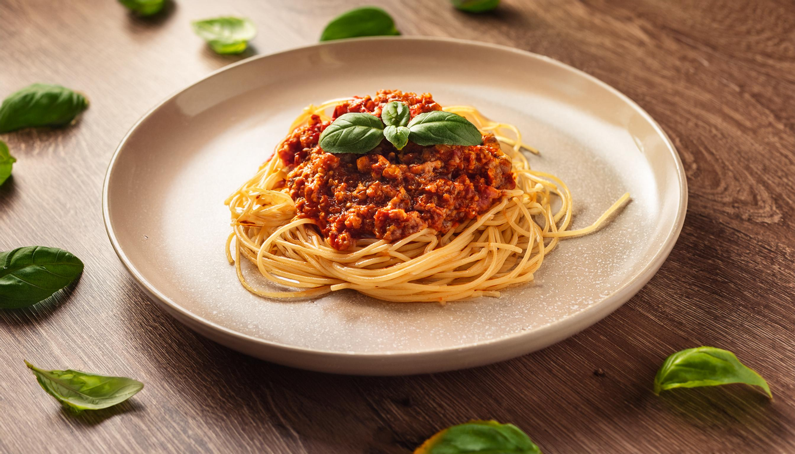
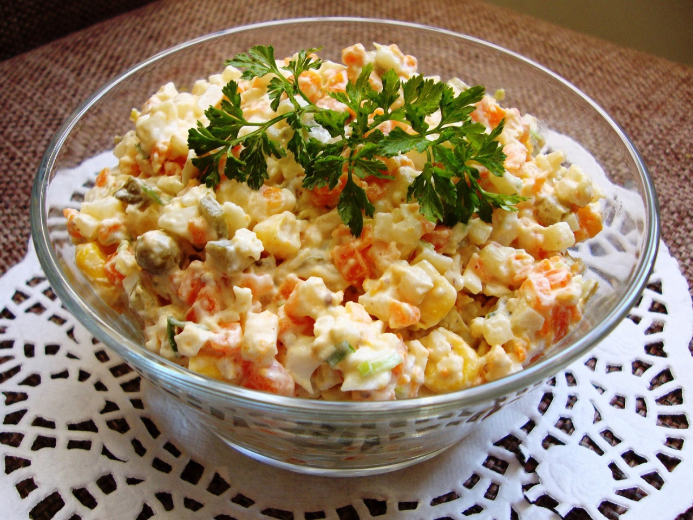

Najnowsze Przepisy

Spaghetti Bolognese
Kategoria: Dania główne
| Składnik | Ilość |
|---|---|
| Makaron spaghetti | 500g |
| Mięso mielone wołowe | 500g |
| Pomidorowe passata | 400g |
| Cebula | 1 sztuka |
| Czosnek | 2 ząbki |
| Oliwa z oliwek | 2 łyżki |
| Przyprawy (bazylia, oregano, sól, pieprz) | do smaku |
Kroki przygotowania:
- Ugotuj makaron spaghetti zgodnie z instrukcją na opakowaniu.
- Na rozgrzanej oliwie z oliwek podsmaż posiekaną cebulę i czosnek.
- Dodaj mięso mielone i smaż, aż się zrumieni.
- Dolej passatę pomidorową i dodaj przyprawy. Duś na małym ogniu przez 20 minut.
- Podawaj makaron polany sosem bolognese, posypany parmezanem.

Sałatka Cezar
Kategoria: Sałatki
| Składnik | Ilość |
|---|---|
| Sałata rzymska | 1 główka |
| Kurczak grillowany | 200g |
| Grzanki | 100g |
| Parmezan | 50g |
| Sos Cezar | 3 łyżki |
Kroki przygotowania:
- Umyj i osusz sałatę rzymską, porwij ją na mniejsze kawałki.
- Pokrój kurczaka grillowanego w paski.
- W dużej misce wymieszaj sałatę, kurczaka, grzanki i starty parmezan.
- Polej sosem Cezar i delikatnie wymieszaj.
- Podawaj od razu.

Szarlotka
Kategoria: Desery
| Składnik | Ilość |
|---|---|
| Jabłka | 1 kg |
| Cukier | 150g |
| Masło | 200g |
| Mąka | 300g |
| Cukier puder | 50g |
Kroki przygotowania:
- Jabłka obierz, pokrój w kostkę i wymieszaj z cukrem.
- Przygotuj ciasto: wymieszaj mąkę, masło i cukier puder, aż powstanie kruszonka.
- Na dnie formy do pieczenia ułóż połowę ciasta, następnie warstwę jabłek.
- Przykryj jabłka resztą ciasta.
- Piecz w piekarniku nagrzanym do 180°C przez 40-45 minut, aż ciasto będzie złociste.
- Podawaj na ciepło lub zimno.

Kurczak tikka masala
Kategoria: Dania główne
| Składnik | Ilość |
|---|---|
| Kurczak | 500g |
| Jogurt naturalny | 150g |
| Pasta tikka masala | 2 łyżki |
| Śmietana 30% | 100g |
| Przyprawy (curry, kumin, kolendra) | do smaku |
Kroki przygotowania:
- Kurczaka pokrój w kostkę i wymieszaj z jogurtem i pastą tikka masala. Odstaw na 1 godzinę.
- Na rozgrzanej patelni podsmaż kurczaka, aż się zrumieni.
- Dodaj śmietanę i przyprawy, duś na małym ogniu przez 15 minut.
- Podawaj z ryżem lub chlebkiem naan.
Zupa pomidorowa
Kategoria: Zupy
| Składnik | Ilość |
|---|---|
| Pomidory w puszce | 400g |
| Cebula | 1 sztuka |
| Czosnek | 2 ząbki |
| Rosół lub bulion warzywny | 500ml |
| Przyprawy (bazylia, sól, pieprz) | do smaku |
Kroki przygotowania:
- Na oliwie podsmaż posiekaną cebulę i czosnek.
- Dodaj pomidory z puszki i gotuj przez 10 minut.
- Dolej bulion i gotuj kolejne 15 minut.
- Zmiksuj zupę na gładki krem, dopraw przyprawami.
- Podawaj z grzankami lub makaronem.

Pierogi ruskie
Kategoria: Dania główne
| Składnik | Ilość |
|---|---|
| Ciasto na pierogi | 500g |
| Twarożek | 300g |
| Ziemniaki | 300g |
| Cebula | 1 sztuka |
| Masło | 50g |
Kroki przygotowania:
- Ugotuj ziemniaki i rozgnieć je na puree.
- Dodaj twarożek, podsmażoną cebulę i masło, wymieszaj na farsz.
- Rozwiń ciasto na pierogi i wykrawaj krążki.
- Nałóż farsz na krążki, zlep brzegi i gotuj pierogi w osolonym wrzątku przez 3-4 minuty.
- Podawaj z cebulką skwarkami.

Tiramisu
Kategoria: Desery
| Składnik | Ilość |
|---|---|
| Mascarpone | 500g |
| Jajka | 4 sztuki |
| Cukier | 100g |
| Biszkopty | 200g |
| Kawa | 150ml |
Kroki przygotowania:
- Utrzyj żółtka z cukrem, dodaj mascarpone i wymieszaj.
- Ubij białka na sztywną pianę i delikatnie połącz z masą mascarpone.
- Biszkopty zamocz w kawie i ułóż na dnie formy.
- Na biszkopty nałóż warstwę kremu, powtórz warstwy.
- Wstaw do lodówki na 4 godziny, przed podaniem posyp kakao.

Barszcz czerwony
Kategoria: Zupy
| Składnik | Ilość |
|---|---|
| Buraki | 500g |
| Cebula | 1 sztuka |
| Woda | 1.5l |
| Czosnek | 2 ząbki |
| Ocet | 2 łyżki |
Kroki przygotowania:
- Buraki obierz, pokrój w kostkę i gotuj w wodzie z cebulą i czosnkiem przez 30 minut.
- Dodaj ocet i gotuj kolejne 10 minut.
- Przecedź barszcz, dopraw solą i pieprzem.
- Podawaj z uszkami lub śmietaną.

Omlet francuski
Kategoria: Śniadania
| Składnik | Ilość |
|---|---|
| Jajka | 4 sztuki |
| Masło | 20g |
| Sól i pieprz | do smaku |
| Śmietana 30% | 2 łyżki |
Kroki przygotowania:
- Roztrzep jajka z solą i pieprzem.
- Na rozgrzanej patelni rozpuść masło i wlej jajka.
- Smaż na małym ogniu, aż omlet się zetnie.
- Podawaj z odrobiną śmietany.

Gulasz węgierski
Kategoria: Dania główne
| Składnik | Ilość |
|---|---|
| Mięso wołowe | 500g |
| Cebula | 1 sztuka |
| Papryka | 2 sztuki |
| Pomidory | 200g |
| Przyprawy (papryka słodka, kminek, czosnek) | do smaku |
Kroki przygotowania:
- Mięso pokrój w kostkę i podsmaż na patelni.
- Dodaj posiekaną cebulę, paprykę i pomidory.
- Dopraw przyprawami i duś na małym ogniu przez 1,5 godziny.
- Podawaj z ziemniakami lub ryżem.

Krem z dyni
Kategoria: Zupy
| Składnik | Ilość |
|---|---|
| Dyni | 500g |
| Cebula | 1 sztuka |
| Bulion warzywny | 750ml |
| Przyprawy (imbir, gałka muszkatołowa) | do smaku |
Kroki przygotowania:
- Dynię obierz, pokrój w kostkę i gotuj z cebulą w bulionie.
- Dodaj przyprawy i gotuj, aż dynia będzie miękka.
- Zmiksuj zupę na gładki krem.
- Podawaj z grzankami lub śmietaną.

Sernik nowojorski
Kategoria: Desery
| Składnik | Ilość |
|---|---|
| Twarożek | 500g |
| Biszkopty | 200g |
| Cukier | 150g |
| Masło | 100g |
| Jajka | 3 sztuki |
Kroki przygotowania:
- Rozdrobnij biszkopty i wymieszaj z roztopionym masłem. Ułóż na dnie formy.
- Utrzyj twarożek z cukrem i jajkami na gładką masę.
- Wylej masę na spód z biszkoptów i piecz w piekarniku nagrzanym do 160°C przez 1 godzinę.
- Po upieczeniu ostudź sernik w lodówce przed podaniem.

Łosoś pieczony z ziołami
Kategoria: Dania główne
| Składnik | Ilość |
|---|---|
| Łosoś | 500g |
| Oliwa z oliwek | 2 łyżki |
| Zioła (tymianek, rozmaryn, koperek) | do smaku |
| Sól i pieprz | do smaku |
| Cytryna | 1 sztuka |
Kroki przygotowania:
- Rozgrzej piekarnik do 180°C.
- Łososia natrzyj solą, pieprzem i ziołami, polej oliwą z oliwek.
- Połóż łososia na blasze wyłożonej papierem do pieczenia.
- Piecz przez 20-25 minut, aż ryba będzie się łatwo rozpadać widelcem.
- Podawaj z plasterkami cytryny.

Schabowy z kapustą
Kategoria: Dania główne
| Składnik | Ilość |
|---|---|
| Schab wieprzowy | 4 plastry |
| Jajko | 1 sztuka |
| Bułka tarta | 100g |
| Kapusta kiszona | 500g |
| Masło | 50g |
| Sól i pieprz | do smaku |
Kroki przygotowania:
- Schabowe rozbij tłuczkiem, dopraw solą i pieprzem.
- Panieruj schabowe w jajku, a następnie w bułce tartej.
- Usmaż schabowe na rozgrzanym maśle na złoty kolor.
- Kapustę kiszoną podsmaż na maśle przez 10 minut.
- Podawaj schabowe z kapustą i ziemniakami.

Sałatka grecka
Kategoria: Sałatki
| Składnik | Ilość |
|---|---|
| Pomidory | 4 sztuki |
| Ogórek | 1 sztuka |
| Czerwona cebula | 1 sztuka |
| Oliwki | 100g |
| Ser feta | 200g |
| Oliwa z oliwek | 3 łyżki |
| Sól i pieprz | do smaku |
Kroki przygotowania:
- Pokrój pomidory, ogórek i cebulę w kostkę.
- Dodaj oliwki i pokruszony ser feta.
- Polej oliwą z oliwek, dopraw solą i pieprzem.
- Wymieszaj delikatnie i podawaj od razu.

Sałatka jarzynowa
Kategoria: Sałatki
| Składnik | Ilość |
|---|---|
| Marchewka | 2 sztuki |
| Ziemniaki | 3 sztuki |
| Groszek zielony | 100g |
| Jajka | 3 sztuki |
| Majonez | 3 łyżki |
| Sól i pieprz | do smaku |
Kroki przygotowania:
- Ugotuj marchewkę, ziemniaki i jajka na twardo.
- Pokrój warzywa i jajka w kostkę.
- Dodaj groszek i majonez, dopraw solą i pieprzem.
- Wymieszaj dokładnie i schłódź przed podaniem.